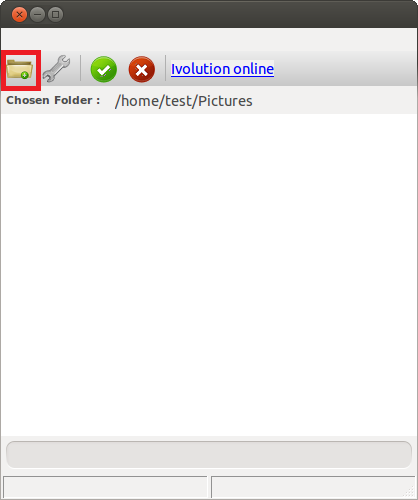
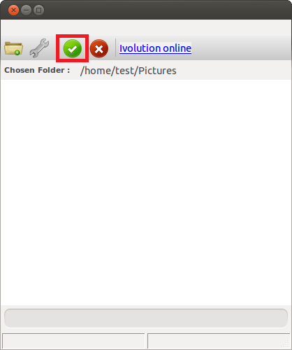
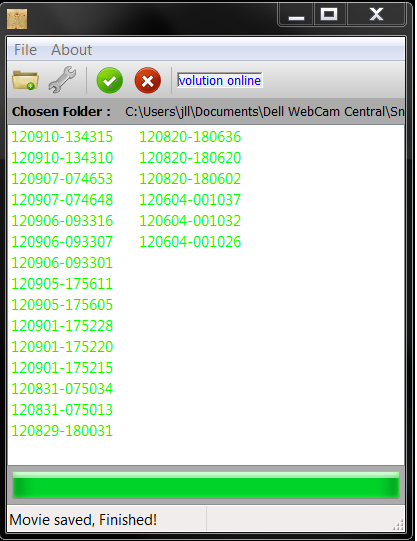

Coz' 1 minute is faster than 5 minutes... Light speed tutorial
This page aims at putting you on rails as fast as possible, so that you can see what Ivolution is capable of by yourself in less than 5 minutes.
First of all, download the version of Ivolution corresponding to your operating system here. Then, download the set of samples that you are going to use here, and extract the archive where you want.
Install the Ivolution and run it. You should now see the main frame of the application.
Click on the input folder, and select the location of the samples.

Click on start, and wait for the processing to end.

Here is what you should get once everything is finished :

Done ! You can now watch the timelapse generated from the images.
The timelapse is saved in your Video folder by default. For Windows users, it should be C:\Users\myUser\Videos, and for Ubuntu users /home/myUser/Videos.
For more option, have a look at the basic part of the documentation.